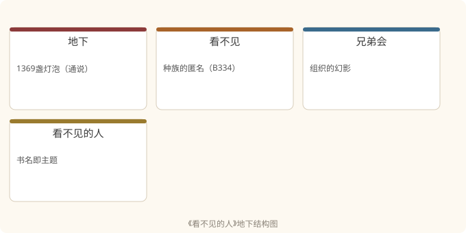

看不见的人
一、基本信息
| 作者 | 拉尔夫·艾里森 |
|---|---|
| 成书/出版 | 1952年（作者页 B317 口径：Invisible Man (1952)） Ralph Ellison — Encyclopaedia Britannica（百科全书） |
| 国别/地区 | 美国 |
| 时代 | 现当代 · 20世纪 |
| 体裁 | 长篇小说 |
| 语言 | 英语 |

《看不见的人》地下结构图（主题·结构图）
二、创作背景
作者页（B317）：'the story of an unnamed Black man'——无名黑人的故事（B317 作者页定位）；1953年获 National Book Award（B317）。
作者（B317）：'shadow and act'——散文集 Shadow and Act (1964)（B317）。
地位（通说待核）：美国黑人文学的里程碑。
三、内容脉络
无名黑人的地下独白：从南方到哈莱姆——'看不见'的一生（通说待核）。
'兄弟会'与' unpunished'（通说待核）。
四、主要人物表
| 人物 | 身份 | 说明 |
|---|---|---|
| 无名叙述者 | 黑人青年 | （通说待核） |
| 拉斯? | '狂人' | （通说待核） |
五、主题与艺术特点
- '看不见'：种族的匿名（通说待核）。
- 身份的地下化（通说待核）。
- 爵士与蓝调结构（通说待核）。
六、影响与评论
- 作者页：'the story of an unnamed Black man'（B317 作者页口径）。
Ralph Ellison — Encyclopaedia Britannica（百科全书） - 作者页：1953年 National Book Award（B317 作者级定位）。
Ralph Ellison — Encyclopaedia Britannica（百科全书）
七、阅读建议
难点
- '看不见'的多义。
- 哈莱姆背景。
- 《看不见的人》（人民文学出版社/上海译文版本，通说待核）。
- 英文原版。
美国黑人文学首选之一。
八、待核实
- 1952年出版（Random House说）核对。
- 兄弟会/莱因哈特等情节核对。
- 1953年 National Book Award（B317 已载）核对。
本页主要来源
拉尔夫·艾里森的其他收录作品：看不见的人